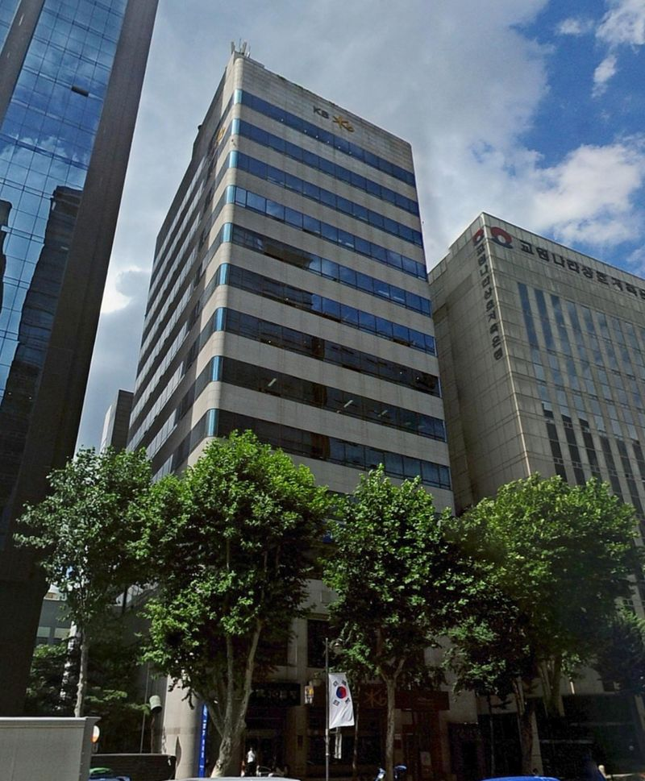
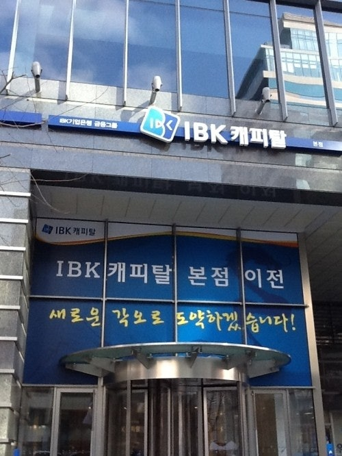
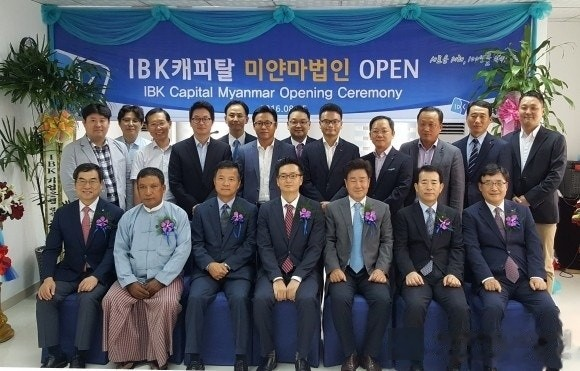
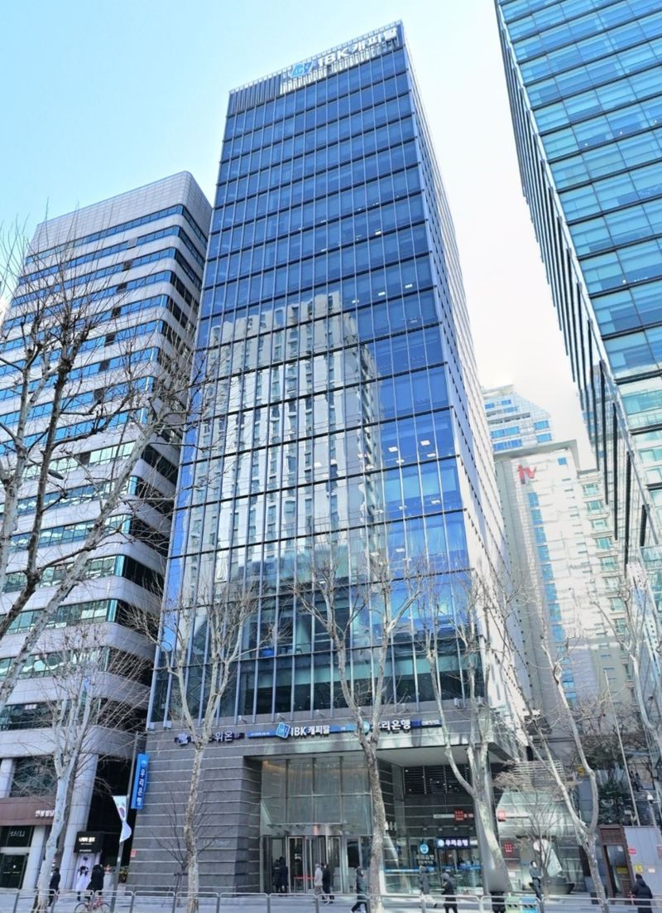

고객과 함께한 40년, 미래를 여는 금융.
파도는 멈추지 않습니다 — 중소기업과 함께 넘어온 40년의 물결이 새로운 바다로 나아갑니다.
1986년 11월, 한국기업개발금융(주)이라는 이름으로 첫 물결이 일었습니다. 산업화의 파도 속에서 담보가 부족한 유망 중소기업에 자본을 공급하는 개발금융이 사명이었습니다. 1997년 외환위기라는 거대한 파고 앞에서도 항해는 멈추지 않았고, 1999년 기은개발금융과 기은할부금융의 합병으로 종합 여신전문금융회사 '기은캐피탈'이 출범하며 더 단단한 배로 거듭났습니다.

2000년대, 기업금융의 토대 위에서 2006년 구조조정·스타트업 투자조합을 결성하며 투자금융의 첫 물살을 일으켰습니다. 2008년 글로벌 금융위기의 폭풍 앞에서는 오히려 자본을 확충하며 중소기업 곁을 지켰고, 두 차례 증자로 배를 키운 2009년, IBK금융그룹의 새 기수를 달고 'IBK캐피탈'로 다시 태어났습니다. 폭풍이 지나간 자리에서 더 선명해진 이름이었습니다.

2010년 IBK기업은행의 100% 자회사가 되며 그룹의 돛을 활짝 폈습니다. 새 사옥과 차세대 전산시스템으로 배를 정비했고, PEF 운용과 신기술금융으로 투자금융이라는 새 항로를 개척했습니다. 시장은 AA- 신용등급으로 화답했습니다. 2016년에는 미얀마에 닻을 내리며 국경 너머의 바다로 나아갔고, 2017년 금융자산 5조 원 — 출항 이후 가장 너른 바다에 도달했습니다.

팬데믹이라는 전례 없는 풍랑 속에서 오히려 돛을 더 크게 올렸습니다. 1,000억 원 증자로 벤처투자의 물살을 키웠고, 2022년 금융자산 10조 원 — 5년 만에 두 배의 바다를 건넜습니다. 혁신금융의 공로로 국무총리 표창을 받았고, 2025년에는 역대 최대 순이익으로 항해 40년차를 맞았습니다. 이제 혁신의 파도는 다음 40년의 수평선을 향합니다.

지금은 그저 낯선 숫자들입니다.
한 페이지씩 넘기며, 이 숫자들에 담긴 40년의 항해를 확인해보세요.
방금 보신 네 번의 물결을 포함해, IBK캐피탈의 오늘을 여덟 개의 숫자로 한눈에 모았습니다.
2016년 한 해 5.5조 원이던 취급액은 2025년 8.2조 원까지 불었습니다. 심사하고, 조율하고, 실행한 하루하루가 모여 10년 동안 69조 6,608억 원 — 임직원이 중소기업의 바다로 흘려보낸 금융의 강물입니다.
기업 1,701곳과 개인 고객 1,008명. 장부에는 숫자로 적히지만, 임직원에게는 하나하나가 이름이고 얼굴입니다. 첫 미팅의 악수부터 실행의 순간까지 — 신뢰는 언제나 사람과 사람 사이에서 자랐습니다.
금융이 바다로 나가려면 배 안의 모든 장치가 맞물려 돌아야 합니다. 업무의 기준과 절차를 담아 임직원이 다듬어 온 내부 문서 7,488건 — 보이지 않는 곳에서 모든 실행을 매끄럽게 움직여 온 엔진의 윤활유이자 연료입니다.
1986년 11월 1일의 첫 출근부터 2026년 11월 1일까지 — 14,610번의 아침을 열었습니다. 파도는 하루도 같은 적이 없었지만, 바다로 나가는 사람들의 마음은 같았습니다.
그 모든 숫자 뒤에, 오늘도 파도를 만드는 286명의 임직원이 있습니다.
40년의 항해를 함께해 온 사람들의 마음이 파도가 되어 흐릅니다. 여러분의 한마디를 지금 바로 띄워주세요.
“지난 40년, 고객의 신뢰가 우리를 키웠습니다.
다가올 40년, 혁신의 파도가 되어 보답하겠습니다.”